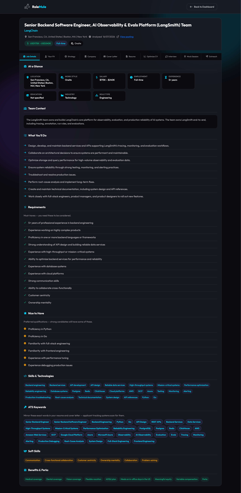
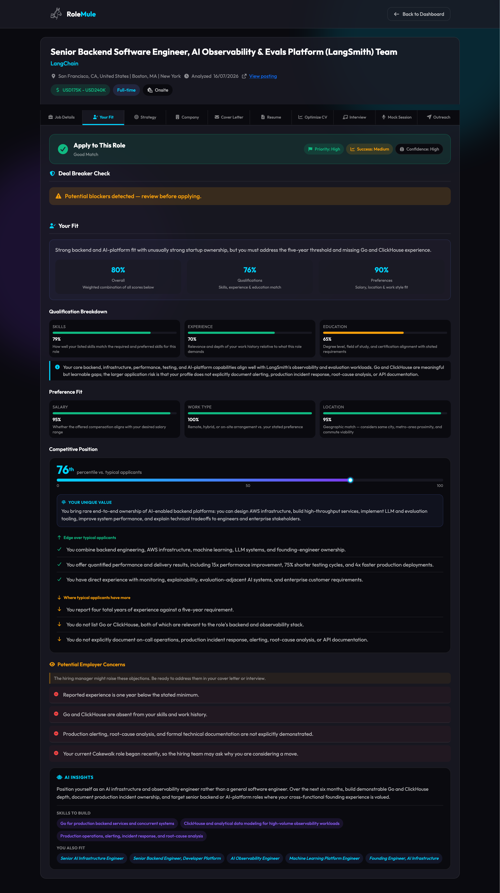
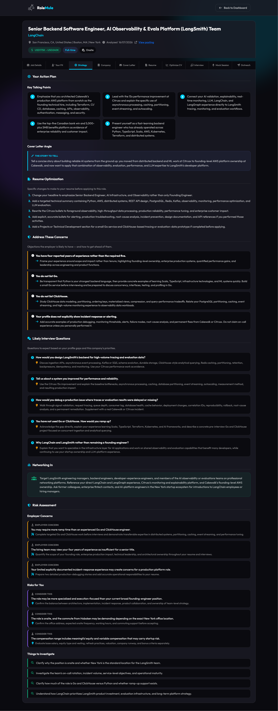
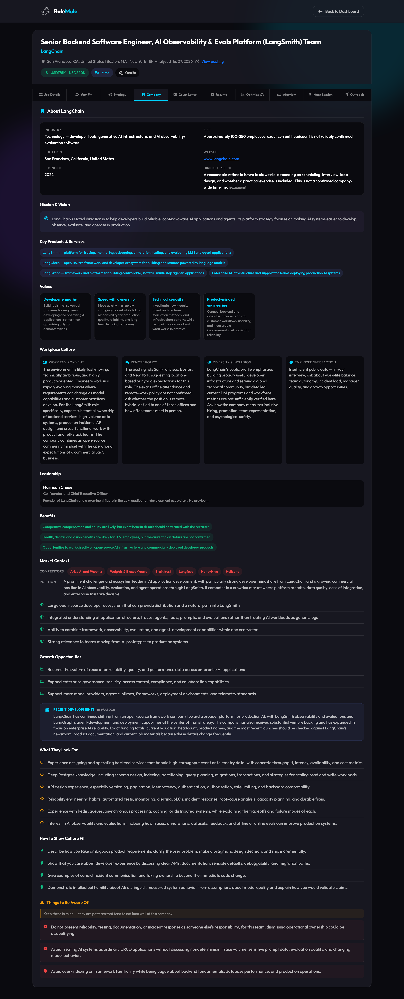
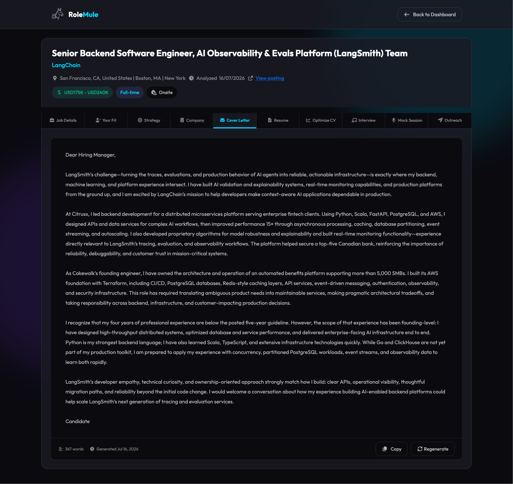
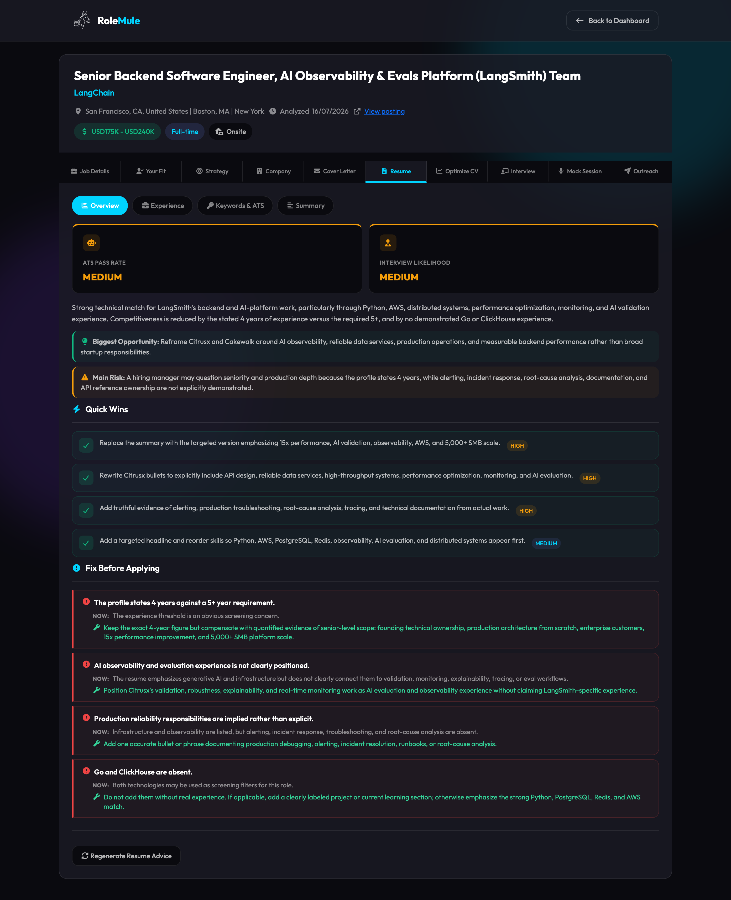
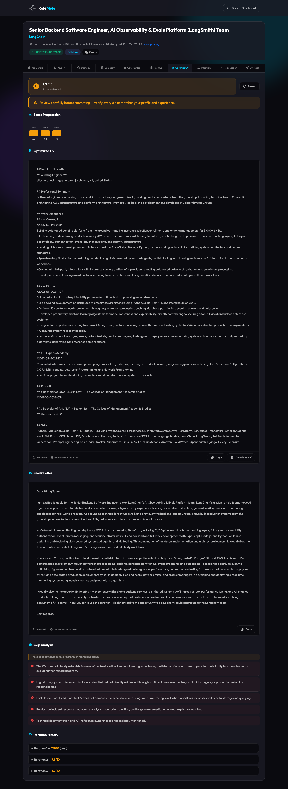
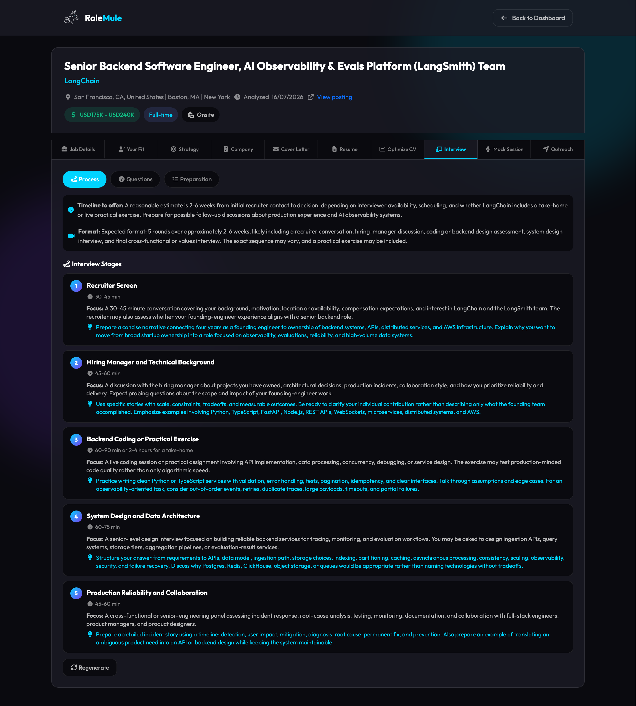
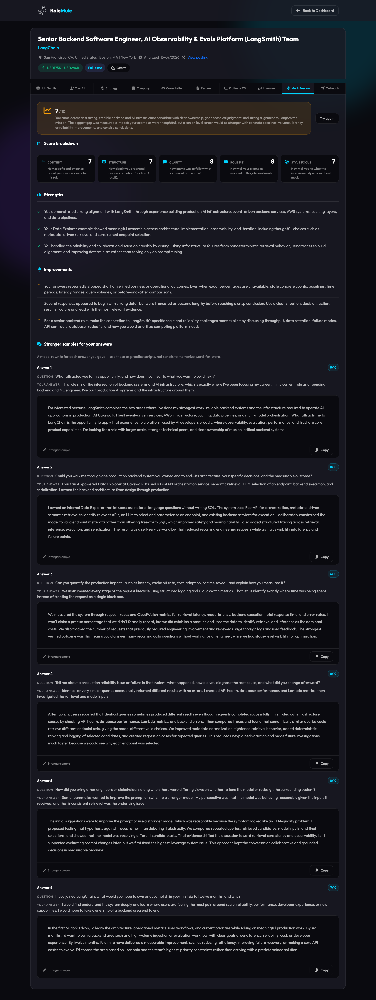
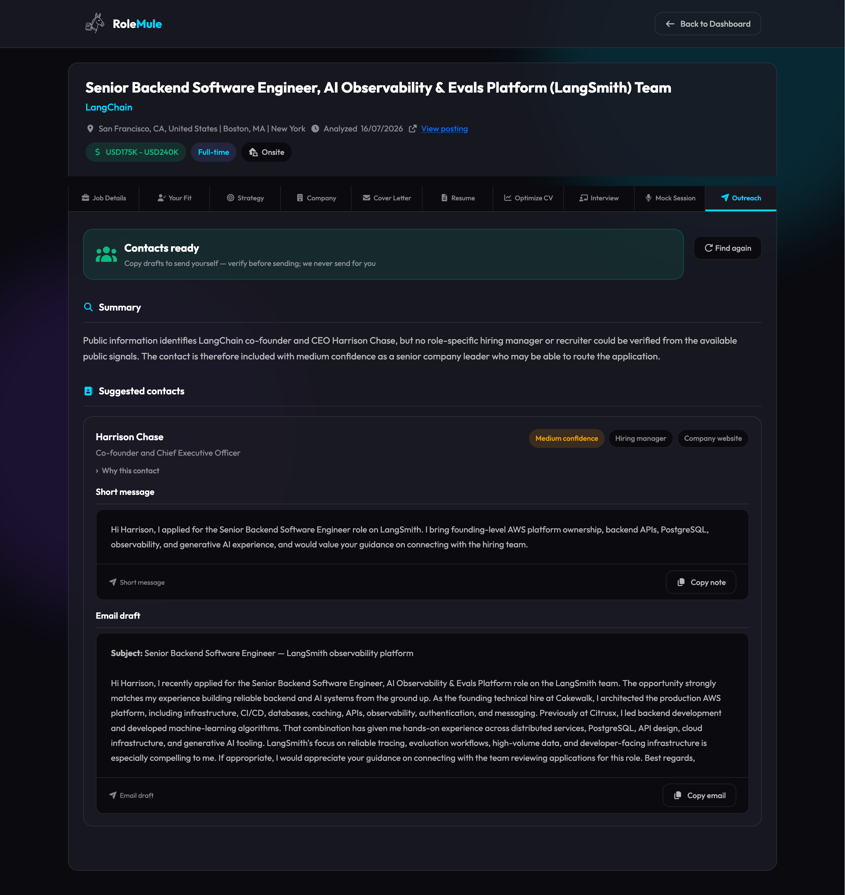

One mule for every role.
Paste a job description, upload a PDF/TXT/DOCX, or use our Chrome extension — and get full AI-powered insights in ~30 seconds. Then track the application, optionally optimize your CV, draft outreach, and prepare for the interview. Bring your own AI key, automate with the CLI (Claude, Cursor, and more), and keep your data 100% local.
Add Any Job Posting
Paste the job description, upload a PDF, TXT, or DOCX, or use our Chrome extension to extract it from any job site.
AI Works in the Background
No waiting. Specialized AI agents instantly start analyzing the job, matching your profile, researching the company, and writing your documents — while you keep browsing.
Review & Apply with Confidence
Get notified when your analysis is ready. Review the job analysis, your fit, strategy, company, cover letter, and resume tips. Optionally optimize your CV — then apply.
Continue Your Journey
Draft hiring outreach, prepare for interviews (guide + mock session), and use 6 career tools — follow-ups, thank you notes, salary coach, and more.
Job searching is exhausting
That's 15x faster. Focus on what matters: preparing for interviews.
Five AI Agents Working For You
Each job analysis runs through our multi-agent pipeline — sequential where it must be, parallel where it can — so you get comprehensive intelligence in seconds.
Job Analyzer
Parses every detail from the posting: required vs. nice-to-have skills, salary range, seniority level, work arrangement, and ATS keywords.
Profile Matcher
Deep semantic analysis of your profile against every job requirement. Surfaces a match score, deal-breakers, strengths, skill gaps, and a clear recommendation on whether to apply.
Company Researcher
Researches culture, values, recent news, business model, products, hiring practices, and typical interview process — so you walk in knowing more than most candidates.
Resume Advisor
Priority-ranked, ATS-aware tips for this specific role. Tells you exactly which sections to rework, which keywords are missing, what metrics to add, and how to reframe your experience.
Cover Letter Writer
Writes a fully personalized letter that connects your actual experience to the role's specific requirements. Adapts tone and style to match the company culture.
More AI Agents For The Same Role
When the workflow finishes, run these agents on demand from the application.
Optimize CV
Runs a hiring-manager evaluate → revise loop on your CV for this role. Improves bullets, keywords, and positioning until the score levels out — then you download the optimized CV and a matching cover letter.
Interview Prep
Builds a role-specific interview guide from your profile and the posting: predicted questions, STAR answers grounded in your experience, process map, and a day-before checklist.
Mock Session
Runs a timed mock interview for this role — HR, hiring manager, or peer styles. Speak or type your answers, then get a scored debrief covering what went well and what to fix next.
Hiring Outreach
Finds public contacts for the role and drafts copy-ready outreach — email plus a short note. You review and send yourself.
Analyze jobs and match forms On any job site
Browse jobs naturally. When you find one you like, use Analyze This Job to send the posting to your dashboard for the full AI workflow, or use Match Form To Profile to fill application forms from your profile.
Extracts page content and sends it to AI for analysis
Fills application forms from your profile. Review before submit.
Career Tools for Every Stage
From your first application to salary negotiation — AI-powered tools for your entire job search journey.
Thank You Notes
Write personalized post-interview emails that reference what was actually discussed — not a generic template.
Job Comparison
Compare 2–3 opportunities side-by-side with AI scoring across compensation, career growth, work-life balance, culture fit, and more.
Salary Coach
Get a full negotiation strategy: opening script, counter-offer responses, alternative asks, and tactics to maximize your total package.
Follow-up Emails
Tailored follow-ups for every stage — after applying, after a phone screen, after interviews, after a final round, or when you've been ghosted.
Reference Requests
Generate warm, professional emails to ask former colleagues or managers to serve as references — personalized to your relationship with them.
Rejection Analysis
Paste a rejection email and get honest analysis: what likely went wrong, what to improve, and concrete actions to strengthen your next application.
Automate RoleMule from the terminal
Start jobs, check status, and pull results with rolemule —
yourself, or through Claude and Cursor.
rolemule auth login
rolemule workflow analyze job.txt --wait
rolemule workflow results SESSION --section cover-letterReal Job. Real Results. See What You'll Get.
This is the actual output for a real job posting — Applied AI Engineer at Anthropic. Explore every tab, including Optimize CV, Mock Session, and Outreach.









